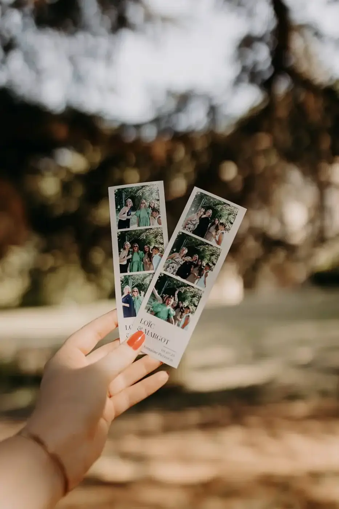

Le rythme d’un mariage : le secret invisible qui transforme une belle journée en souvenir inoubliable
Entre émotions, respirations et instants suspendus, découvrez pourquoi le rythme d’un mariage est aussi important que sa décoration, son lieu ou son repas.
Organiser un mariage, c’est souvent penser aux grands incontournables : le lieu de réception, la décoration, le traiteur, la robe, les fleurs, la musique… Chaque détail est soigneusement choisi pour créer une journée harmonieuse et à l’image du couple.
Pourtant, il existe un élément essentiel dont on parle très peu. Un élément invisible, que les invités ne remarquent pas consciemment, mais qui influence profondément leur manière de vivre cette journée.
Cet élément, c’est le rythme.
On pourrait comparer un mariage à un film. Les décors peuvent être magnifiques, les acteurs talentueux et la bande-son exceptionnelle. Si le rythme n’est pas le bon, l’émotion ne prend pas. Certaines scènes semblent trop longues, d’autres passent trop vite, et le spectateur finit par décrocher.
Un mariage fonctionne exactement de la même manière.

Ce n’est pas uniquement une succession d’étapes – une cérémonie, un cocktail, un dîner, une soirée dansante. C’est une histoire qui se raconte tout au long de la journée, avec ses moments forts, ses respirations, ses surprises et ses instants plus calmes.
Et c’est souvent ce rythme, pensé avec soin, qui fait dire à vos invités : « Cette journée est passée si vite… mais j’ai l’impression d’avoir vécu tellement de choses. »
Le rythme : l’ingrédient que personne ne voit… mais que tout le monde ressent
Lorsque l’on demande à des invités pourquoi ils ont adoré un mariage, ils évoquent rarement le déroulé de la journée.
Ils parleront de l’ambiance, de l’émotion de la cérémonie, d’un discours particulièrement touchant ou encore de cette sensation que tout s’est enchaîné naturellement.
Pourtant, derrière cette impression de fluidité se cache un véritable travail d’organisation, car un mariage n’est pas seulement une addition de prestations. C’est une expérience. Et comme toute expérience, elle possède son propre tempo.
Il y a des moments où l’on doit ressentir de l’émotion. Des instants où l’on a besoin de souffler. Des séquences plus festives. D’autres plus intimistes.
L’objectif n’est jamais d’occuper chaque minute du planning. Au contraire. Un mariage trop chargé peut rapidement devenir fatigant, aussi bien pour les mariés que pour leurs invités.
À l’inverse, un rythme trop lent peut créer des temps morts et faire retomber l’énergie. Trouver cet équilibre est un véritable art.
Une journée qui respire est une journée que l’on savoure
Dans notre quotidien, nous avons souvent tendance à courir après le temps. Le jour du mariage ne devrait pas reproduire cette sensation.
Pourtant, beaucoup de couples imaginent un programme extrêmement dense.
Une animation après l’autre. Des photos sans interruption. Des déplacements permanents. Des surprises toutes les demi-heures.
Avec une seule idée en tête : ne jamais laisser un moment de vide.
Mais ces « vides » ne sont pas des erreurs. Ils sont essentiels. Ils permettent aux invités de discuter, de se retrouver, de partager un verre, de rire ensemble. Ils offrent aussi aux mariés quelques minutes pour réaliser ce qu’ils sont en train de vivre.
Ces respirations donnent de la valeur aux temps forts.
Sans elles, les émotions s’enchaînent tellement vite qu’elles finissent par se confondre. Un mariage réussi n’est pas une course contre la montre.
C’est une journée qui prend le temps d’exister.

Chaque temps fort mérite son propre espace
La cérémonie, le cocktail, le dîner, les discours et l’ouverture de bal.
Ces moments sont souvent considérés comme de simples étapes du planning. En réalité, chacun possède sa propre émotion.
La cérémonie est un moment de concentration et de profondeur. Le cocktail marque un relâchement. Les invités échangent, découvrent le lieu, profitent de l’atmosphère. Le dîner rassemble. Les discours créent des émotions inattendues et la soirée célèbre.
Si ces moments s’enchaînent trop rapidement, ils perdent une partie de leur intensité.
Laisser le temps aux émotions de s’installer est indispensable. C’est un peu comme écouter un morceau de musique. Les silences entre les notes sont tout aussi importants que les notes elles-mêmes. Ils permettent de créer du relief.
Un mariage fonctionne exactement de cette façon.

Les plus beaux souvenirs naissent souvent entre deux moments
Lorsque les couples racontent leur mariage plusieurs mois plus tard, leurs souvenirs les plus précieux ne correspondent pas toujours aux instants officiellement prévus.
Ils évoquent un regard échangé juste après la cérémonie, quelques minutes seuls au coucher du soleil, une discussion improvisée avec leurs grands-parents, ou bien un fou rire dans les coulisses avant l’entrée en salle.
Ces instants n’étaient pas inscrits dans le planning, et pourtant, ils deviennent souvent les souvenirs les plus précieux.
Pourquoi ?
Parce qu’ils sont spontanés. Ils laissent de la place à la vie. Ils rappellent qu’un mariage n’est pas un spectacle parfaitement orchestré.
C’est une journée profondément humaine.
Le rôle du wedding planner : orchestrer le rythme sans que personne ne s'en aperçoive
Lorsque tout semble naturel le jour d’un mariage, c’est souvent qu’un important travail de préparation a été réalisé en amont.
L’une des missions les plus discrètes, mais aussi les plus précieuses, d’un wedding planner consiste justement à penser le rythme de la journée.
Il ne s’agit pas seulement d’établir un planning avec des horaires précis, mais il s’agit de construire une véritable expérience.
Chaque transition est réfléchie. Chaque déplacement est anticipé. Chaque temps fort est placé au bon moment pour que les émotions puissent s’installer naturellement, sans précipitation.
Les invités ne voient jamais ce travail. Ils ont simplement la sensation que tout s’enchaîne avec fluidité.
Ils passent d’un espace à un autre sans attendre inutilement. Les animations arrivent au bon moment, les discours ne cassent pas l’ambiance, les photos sont réalisées sans monopoliser les mariés pendant des heures.
Tout semble évident, et pourtant, derrière cette impression de simplicité se cache une véritable orchestration.
Comme un chef d’orchestre qui ne joue d’aucun instrument mais qui veille à ce que chaque musicien intervienne au moment parfait, le wedding planner veille à l’équilibre général de la journée.
Son objectif n’est pas d’en faire toujours plus.
Son objectif est de faire juste.
Les erreurs de rythme que l'on retrouve le plus souvent
Dans l’organisation d’un mariage, certaines erreurs reviennent régulièrement.
La première consiste à vouloir remplir chaque minute. Par peur que les invités s’ennuient, certains couples multiplient les animations, les surprises, les prises de parole et les activités.
L’intention est belle, mais à force d’enchaîner les temps forts, plus aucun moment ne devient réellement exceptionnel.
L’émotion a besoin d’espace. Les invités ont besoin de discuter, de rire ensemble, de profiter du lieu, d’aller chercher un verre, d’admirer la décoration ou simplement d’observer les mariés.

Un deuxième écueil est de prévoir des temps d’attente trop longs. Une séance photo qui dure deux heures pendant que les invités patientent, un cocktail interrompu trop tôt, un dîner qui commence très tard. Ces situations créent une rupture dans l’énergie de la journée.
Enfin, il existe une erreur plus subtile : oublier les mariés eux-mêmes. Il arrive que les futurs époux passent leur mariage à courir. Ils enchaînent les photos, les salutations, les animations, les discours et les changements de tenue sans jamais prendre le temps de s’arrêter.
Résultat : ils ont parfois l’impression que leur mariage s’est déroulé en quelques minutes.
Offrir des respirations, c'est offrir des souvenirs
On imagine souvent que les souvenirs naissent pendant les grands moments. Pourtant, les souvenirs les plus précieux apparaissent fréquemment entre deux séquences. Quelques instants après la cérémonie, une promenade improvisée dans le parc du domaine, le calme qui précède l’entrée en salle, le coucher du soleil.
Quelques minutes passées seuls avant le début de la soirée.
Ces respirations permettent aux émotions de trouver leur place. Elles donnent aussi aux mariés l’occasion de réaliser ce qu’ils sont en train de vivre. Le mariage est une journée exceptionnelle, mais elle passe incroyablement vite. Créer volontairement quelques parenthèses permet de ralentir cette impression.
Ces instants deviennent souvent les photographies préférées des couples. Parce qu’elles capturent quelque chose de vrai. Pas une pose, une émotion.

Le rythme influence aussi l'expérience des invités
Un mariage réussi ne se résume pas à une belle décoration ou à un excellent repas. Ce que les invités retiendront, c’est avant tout ce qu’ils auront ressenti.
Or, ce ressenti dépend largement du rythme de la journée. Lorsque tout est fluide, les invités se sentent naturellement à leur place. Ils n’ont pas l’impression d’attendre, ils ne regardent pas leur montre mais profitent simplement du moment présent.
Cette sensation de confort est presque invisible.
Pourtant, elle change complètement la perception d’un mariage.
À l’inverse, un rythme déséquilibré crée rapidement de la fatigue. Les invités décrochent, l’énergie diminue, les conversations s’interrompent.
Même un lieu magnifique ne peut pas compenser un déroulement mal pensé.
Le rythme devient alors l’un des éléments les plus importants de l’expérience invité.
Accepter que tout ne soit pas parfaitement maîtrisé
L’organisation d’un mariage demande beaucoup d’anticipation, mais il existe une chose que personne ne pourra jamais contrôler entièrement.
La vie.
Un discours peut durer un peu plus longtemps, le coucher de soleil peut être plus spectaculaire que prévu, les invités peuvent prolonger leurs échanges pendant le cocktail. Et c’est très bien ainsi.
Un planning n’est pas un chronomètre, c’est un fil conducteur. Il doit offrir une structure tout en laissant de la place à la spontanéité. Les plus beaux mariages sont souvent ceux qui savent accueillir l’imprévu. Parce que ce sont justement ces petits moments non planifiés qui créent les souvenirs les plus sincères.

Prendre le temps de vivre son propre mariage
Beaucoup de couples racontent la même chose après leur mariage. « Nous avons l’impression que tout est passé en une heure. »Et cette sensation est normale.
Les émotions accélèrent notre perception du temps. Mais il est possible de la limiter. En s’accordant quelques instants à deux, en observant la salle avant l’arrivée des invités, en prenant quelques minutes après la cérémonie pour respirer, en regardant ses proches rire ensemble, ou bien en savourant réellement le repas. Ces moments ne sont pas du temps perdu, mais ils sont au contraire les plus précieux de la journée.
Car un mariage ne se mesure pas uniquement au nombre d’animations ou au déroulé du planning. Il se mesure à la qualité des souvenirs que l’on construit.
Un mariage réussi est un mariage qui trouve son équilibre

Il n’existe pas de rythme universel.
Chaque mariage possède sa propre personnalité.
Un mariage intimiste dans une maison de famille ne suivra jamais le même tempo qu’une réception de deux cents invités dans un château. Et c’est précisément ce qui fait toute la beauté de cet événement.
Le rythme doit s’adapter au couple; à ses envies, à ses proches et à son histoire.
C’est cette personnalisation qui permet de créer une journée véritablement unique. Une journée où chaque émotion trouve naturellement sa place. Où les temps forts sont sublimés par les moments de calme, où les invités ont le sentiment que tout s’est déroulé avec évidence.
Sans jamais imaginer tout le travail invisible qui a permis cette harmonie.
En bref,
Lorsque l’on pense à un mariage, on imagine spontanément un lieu d’exception, une décoration raffinée ou une table élégamment dressée. Pourtant, les plus beaux souvenirs ne naissent pas uniquement de ce que l’on voit, mais de ce que l’on ressent.
Le rythme d’un mariage est cette trame invisible qui relie chaque instant, chaque émotion et chaque rencontre. Il permet de créer une journée fluide, sincère et profondément humaine. Parce qu’au fond, un mariage réussi n’est pas celui où tout est parfaitement chronométré, mais celui où l’on oublie le temps.
Celui où les invités repartent avec le sentiment d’avoir vécu bien plus qu’une réception, ils repartent avec une émotion. Et c’est précisément cette émotion qui, des années plus tard, restera gravée dans leur mémoire.
Lovely Day Event c'est plusieurs types de prestations
L'organisation de mariage
Je vais intervenir sur toutes les étapes de vos préparatifs et vous guider dans vos choix. Je suis force de proposition pour que votre mariage ne ressemble qu’à vous.
Décoration de mariage
Créative et passionnée, je suis certifiée Wedding Designer et je conçois une ambiance scénographique qui correspond au thème de votre mariage.
Coordination le jour J
Je serai le chef d’orchestre pour gérer les différents prestataires, la mise en place de votre décoration et le déroulement de cette belle journée.